Syllabus Topics
- 2.1 Types of intersections
- 2.2 Un-channelized and channelized intersections
- 2.3 Grade separated intersections (Overpass, underpass and interchanges)
- 2.4 Rotary intersection
- 2.5 Traffic control devices: Traffic sign, marking and islands
- 2.6 Traffic signal
- 2.7 Warrants for traffic signalization
- 2.8 Traffic signal design by Webster method
- 2.9 Traffic calming measures
- 2.10 Importance and design of street lighting
2.1 Types of Intersections
Past Exam Questions on this Topic
- What are the basic requirements of intersection at grade? Mention the factors affecting night visibility at road. How much is the recommended lateral offset of the lighting poles at the road? Explain with reasoning: [3+3+2] (2082 Bhadra, Q3)
Solution
Basic requirements of an at-grade intersection: adequate sight distance, minimum number of conflict points, channelization to guide traffic, low relative speed of crossing streams, adequate capacity, simple and clear layout, and provision for pedestrians, drainage and lighting.
Factors affecting night visibility: brightness/luminance of source, contrast, glare, size of object, and adaptation time of the eye.
Lateral offset of lighting poles: poles are placed clear of the carriageway - a lateral offset of about 0.3 m beyond the kerb face (outside the clear zone) is recommended so that poles do not become a collision hazard, with mounting height at least equal to the road width for full coverage.
Exact recommended offset for local practice should be read from the design Manual.pdf (street-lighting section).
- What are the advantages of one way traffic movement? Draw a right angle four arm intersection of two roads and show various conflict points, if both roads with two way movements? Classify the type of conflicts [8] (2081 Baishakh, Q3)
Solution
Advantages of one-way traffic movement: increased capacity, fewer conflict points, higher operating speed, easier signal coordination, fewer accidents, better parking use and simpler turning movements.
Conflict points at a right-angle four-arm intersection (both roads two-way): there are 32 conflict points = 16 crossing + 8 merging + 8 diverging. Making the roads one-way sharply reduces them. Types of conflict: crossing, merging (converging) and diverging.
- What are the basic requirements of intersection at grade? Write down the design steps of rotary intersection. (2075 Chaitra, Q1)
Solution
Basic requirements of an at-grade intersection: adequate sight distance, minimum number of conflict points, channelization to guide traffic, low relative speed of crossing streams, adequate capacity, simple and clear layout, and provision for pedestrians, drainage and lighting.
Design steps of a rotary intersection:
- Collect traffic (turning-movement) and design data.
- Select the rotary design speed (usually 30-40 km/h).
- Fix the shape and size of the central island and the rotary radius.
- Determine the weaving length and weaving width.
- Fix entry and exit widths and their radii.
- Check the weaving capacity (Wardrop's formula) against design flow.
- Provide islands, markings, signs, lighting and channelization.
- What are the basic requirements of intersection at grade? Mention the importance of street lighting. Explain the different types of traffic islands. How is accident study carried out? Two vehicles A and B approaching at right angles, vehicle A from West and vehicle B from south, collide with each other. After the collision, vehicle A skids in a direction 49° N of W and vehicle B skids 27° E of N. The initial skid distances of vehicles A and B are 37 m and 19 m respectively before collision. If the weight of vehicle A is 4 tonne and vehicle B is 6 tonne, and the skid distances after collision for vehicle A is 15 m and for vehicle B is 36 m, calculate the initial speeds of the vehicles if the average skid resistance of the pavement is found to be 0.55. (2075 Ashwin, Q1)
Solution
Basic requirements of an at-grade intersection: adequate sight distance, minimum conflict points, channelization to guide traffic, adequate capacity, low relative speed, clear and simple layout, provision for pedestrians and proper drainage/lighting.
Importance of street lighting: improves night visibility & safety, reduces night accidents, aids pedestrian security, improves traffic flow and comfort, and enhances aesthetics.
Types of traffic islands: divisional islands, channelizing islands, pedestrian refuge islands, and rotary (central) islands.
Accident study is carried out by collecting accident data (spot maps, collision & condition diagrams), analysing causes (road user, vehicle, road, environment), and applying remedial 3-E measures (Engineering, Enforcement, Education).
Collision numerical
skid coefficient f = 0.55 · vehicle A 4 t, vehicle B 6 t · post-collision skid 15 m (A) and 36 m (B) · pre-collision skid 37 m (A) and 19 m (B) · deflections A 49° N of W and B 27° E of NSpeeds just after the collision
v = √(2 g f d) vA' = √(2 × 9.81 × 0.55 × 15) = 12.72 m/s vB' = √(2 × 9.81 × 0.55 × 36) = 19.71 m/sMomentum conservation to recover the impact speeds
resolve along E–W and N–S using the given deflection angles: E–W: mAuA = mAvA' cos49° + mBvB' sin27° N–S: mBuB = mAvA' sin49° + mBvB' cos27°Add the pre-collision skid to get the original speeds
u0 = √(uimpact² + 2 g f dpre) A over dpre = 37 m , B over dpre = 19 mThe weights (A = 4 t, B = 6 t) enter only as the mass ratio in the momentum equations, so they need not be converted to newtons.
- What are the basic requirements of intersection at grade? Describe grade separated intersection with its advantages and disadvantages. (2074 Ashwin, Q1)
Solution
Basic requirements of an at-grade intersection: adequate sight distance, minimum number of conflict points, channelization to guide traffic, low relative speed of crossing streams, adequate capacity, simple and clear layout, and provision for pedestrians, drainage and lighting.
Grade-separated intersection - advantages: no crossing conflicts, high capacity, continuous high-speed flow, greater safety, minimal delay. Disadvantages: very high cost, large land requirement, complex/long structures and ramps, not economical for low volumes, and possible aesthetic/environmental impact.
Review
- Crash study and Objectives
- Causes of road crash
- Crash data collection, Reporting and Records
- Crash study
- Crash analysis (collision of moving vehicle with parked vehicle, collision of vehicles approaching at intersection from right angle)
Road Intersection and Types20812076
- Area where two or more roads join or cross including the roadway and roadside facilities for traffic movement within it (AASHTO 2001).
- Traffic movement in different directions. About two third of all urban road crashes and one third of all rural road crashes occur within 18 m of an intersection.
- Types:
- At Grade Intersection
- Grade Separated Intersection
At Grade Intersection
- Intersection where all roadways join or cross at the same level
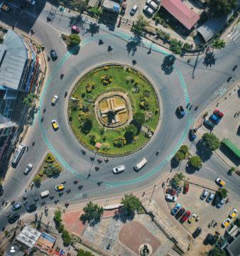
- All traffic maneuvers take place on the same plane.
Basic Requirement of At Grade Intersection208220752074
- Minimum conflict points
- Separate provision for pedestrians and cyclists if their volume is high
- Sudden change of path should be avoided
- Adequate turning radius and width of pavement should be provided
- Adequate visibility for vehicles
- Small approach speed
- Proper sign should be provided
- Good lighting shall be provided for night
Types of At Grade Intersection
Based on number of intersecting legs:
- T or Three-leg intersections with three approaches T Y
- Four-leg or cross intersections: with four approaches
- Multi-leg intersections: with five or more approaches. Scissor Cross Staggered T Staggered and Skewed Multiway
2.2 Un-Channelized and Channelized Intersections
Past Exam Questions on this Topic
- What are the factors affecting night visibility? What are the different types of road marking and traffic island used to regulate and control traffic flow? Explain. [2+3+3] (2076 Ashwin, Q4)
Solution
Factors affecting night visibility: luminance/brightness of the source, contrast between object and background, glare (disability and discomfort), size of the object, and the driver's adaptation/available time.
Types of road markings: longitudinal (centre line, lane lines, edge lines, no-overtaking lines), transverse (stop line, give-way line, pedestrian crossing) and other markings (directional arrows, word messages, hazard/parking markings).
Traffic islands used to regulate and control flow: divisional islands, channelizing islands, pedestrian refuge islands, and rotary (central) islands.
- What are the basic requirements of intersection at grade? Mention the importance of street lighting. Explain the different types of traffic islands. How is accident study carried out? Two vehicles A and B approaching at right angles, vehicle A from West and vehicle B from south, collide with each other. After the collision, vehicle A skids in a direction 49° N of W and vehicle B skids 27° E of N. The initial skid distances of vehicles A and B are 37 m and 19 m respectively before collision. If the weight of vehicle A is 4 tonne and vehicle B is 6 tonne, and the skid distances after collision for vehicle A is 15 m and for vehicle B is 36 m, calculate the initial speeds of the vehicles if the average skid resistance of the pavement is found to be 0.55. (2075 Ashwin, Q1)
Solution
Basic requirements of an at-grade intersection: adequate sight distance, minimum conflict points, channelization to guide traffic, adequate capacity, low relative speed, clear and simple layout, provision for pedestrians and proper drainage/lighting.
Importance of street lighting: improves night visibility & safety, reduces night accidents, aids pedestrian security, improves traffic flow and comfort, and enhances aesthetics.
Types of traffic islands: divisional islands, channelizing islands, pedestrian refuge islands, and rotary (central) islands.
Accident study is carried out by collecting accident data (spot maps, collision & condition diagrams), analysing causes (road user, vehicle, road, environment), and applying remedial 3-E measures (Engineering, Enforcement, Education).
Collision numerical
skid coefficient f = 0.55 · vehicle A 4 t, vehicle B 6 t · post-collision skid 15 m (A) and 36 m (B) · pre-collision skid 37 m (A) and 19 m (B) · deflections A 49° N of W and B 27° E of NSpeeds just after the collision
v = √(2 g f d) vA' = √(2 × 9.81 × 0.55 × 15) = 12.72 m/s vB' = √(2 × 9.81 × 0.55 × 36) = 19.71 m/sMomentum conservation to recover the impact speeds
resolve along E–W and N–S using the given deflection angles: E–W: mAuA = mAvA' cos49° + mBvB' sin27° N–S: mBuB = mAvA' sin49° + mBvB' cos27°Add the pre-collision skid to get the original speeds
u0 = √(uimpact² + 2 g f dpre) A over dpre = 37 m , B over dpre = 19 mThe weights (A = 4 t, B = 6 t) enter only as the mass ratio in the momentum equations, so they need not be converted to newtons.
Unchannelized Intersection
- At grade intersection without channelizing island for directing traffic into definite path.
- Traffic from all approaches intermixes and proceed to their desired path
- Lowest class of intersection, frequent road crashes
- Two types:
- Plain (Simple) intersection,
- Flared intersection
Plain (Simple) Intersection
- No additional lanes are provided for turning movements at intersection approaches.

Flared Intersection
- Approach roads are widened near the intersection by adding one or more lanes to facilitate right/left turning traffic.


Channelized Intersection20762075
- Vehicles approaching an intersection are directed to definite paths by islands, marking etc.
- Channelization can be partial or complete.
- Islands are introduced into the intersectional area.
- It reduces the number of possible conflicts by reducing the area of conflicts available in the carriageway.
- Channelized intersection provides more safety and efficiency.
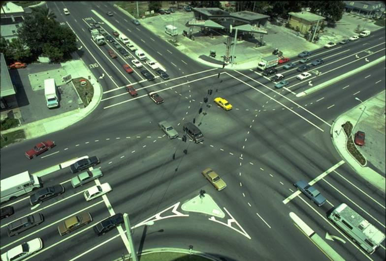


Advantages: Disadvantages:
- Vehicles are confined to definite path
- Decrease conflict area
- Control angle of conflict
- Speed control of entering vehicle
- Refuse island for pedestrian
- Place for installation of traffic signs
- Require large area
- Difficult to design
- One of crossing vehicle will have to stop while other crossing
Conflict Points at Intersections
- Conflicts occur when traffic streams moving in different directions interfere with each other.
- Four types of conflicts: Diverging, Merging, Crossing, Weaving
- The number of possible conflict points at any intersection depends on:
- number of approaches
- turning movements
- type of traffic control
Types of Conflicts
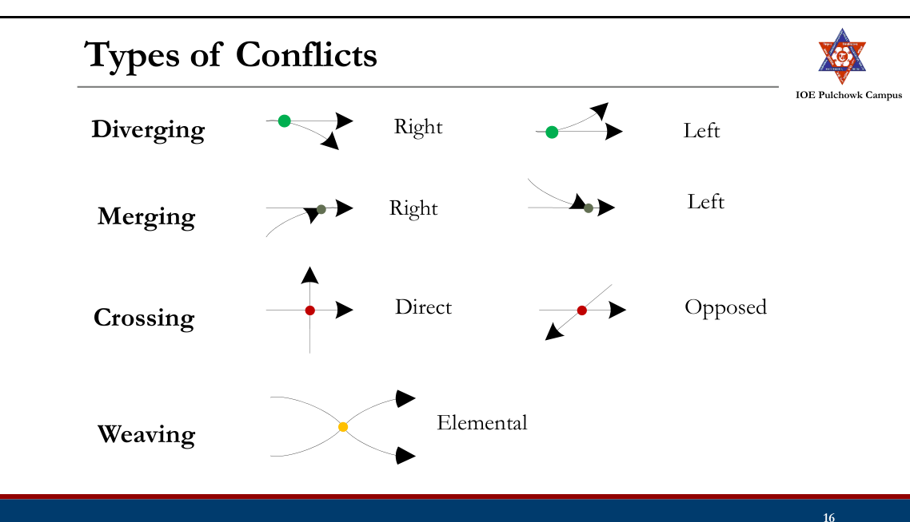
Conflict Points
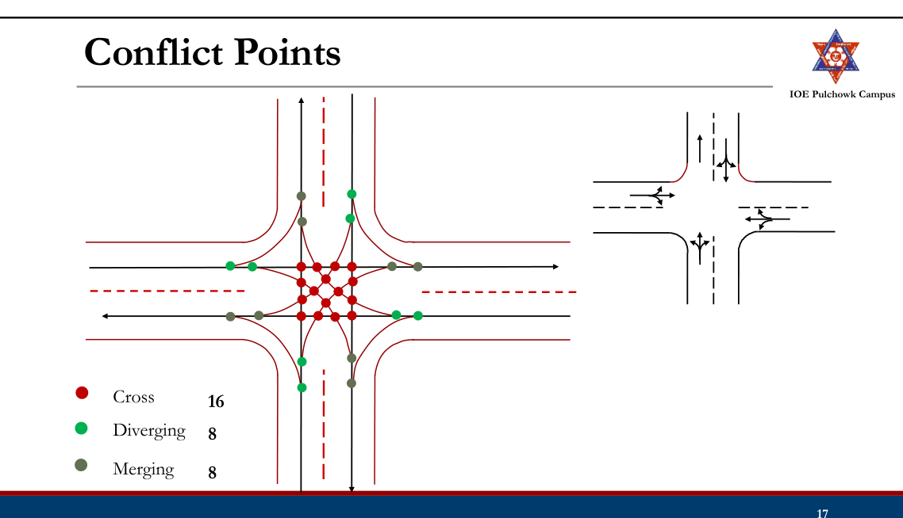
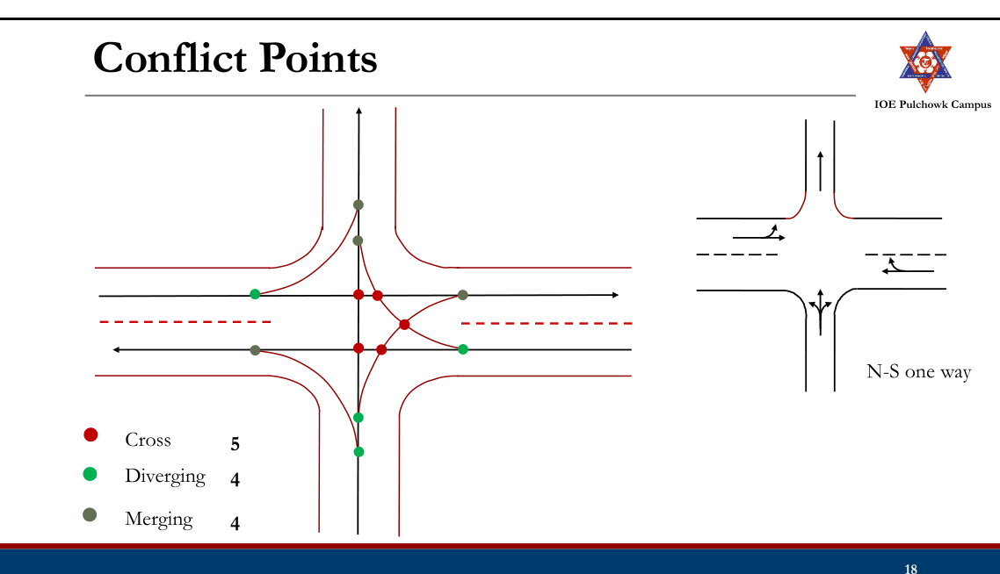
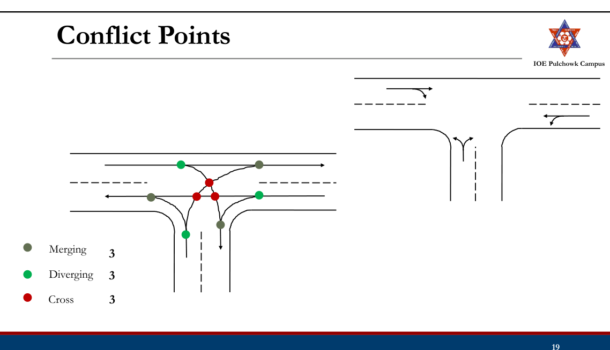
2.3 Grade Separated Intersections (Overpass, Underpass and Interchanges)
Past Exam Questions on this Topic
- Discuss different types of intersection Write the advantages and limitations of grade separated intersection: [8] (2076 Chaitra, Q2)
Solution
Types of intersection: (i) at-grade - uncontrolled, channelized, rotary and signalized; (ii) grade-separated - overpass, underpass and interchanges (diamond, cloverleaf, trumpet, directional).
Grade-separated intersection - advantages: no crossing conflict, high capacity, safe continuous flow, no delay. Limitations: high construction cost, large land requirement, structural complexity, and not economical for low traffic volumes.
- What are the basic requirements of intersection at grade? Describe grade separated intersection with its advantages and disadvantages. (2074 Ashwin, Q1)
Solution
Basic requirements of an at-grade intersection: adequate sight distance, minimum number of conflict points, channelization to guide traffic, low relative speed of crossing streams, adequate capacity, simple and clear layout, and provision for pedestrians, drainage and lighting.
Grade-separated intersection - advantages: no crossing conflicts, high capacity, continuous high-speed flow, greater safety, minimal delay. Disadvantages: very high cost, large land requirement, complex/long structures and ramps, not economical for low volumes, and possible aesthetic/environmental impact.
Grade Separated Intersection20762074
- Intersection where cross flow of traffic are made at different levels so that the movements of traffic in different direction do not conflict with each other
- Grade separation is achieved by separation of intersecting highway in vertical level by means of bridge or underpass.
- Grade separation structures: Overpass, Underpass
- Types of Grade Separated Intersection
- Grade Separated Intersections without Interchange
- Grade Separated Intersections with Interchange
Advantages: Disadvantages:
- No crossing conflicts
- Increased safety
- Better travel time, capacity almost full capacity
- Increased operational efficiency, comfort and convenient
- Possible for any angle of intersection and any number of intersecting roads
- Stage construction of ramps possible
- Requires large area
- Costly infrastructures
- Unnecessary rise and sags are introduced in vertical alignment
Grade Separated Intersection without Interchange
- Simply introduction of an overhead bridge or underpass which enable the traffic stream on the intersecting roads to cross over each other without any conflicts.
- Ramps (Connecting roads) are not provided to connect roads at different levels.
Grade Separation Structures (Overpass)
- Major highway is taken above by raising its profile above the general ground level by embankment and over bridge across another highway

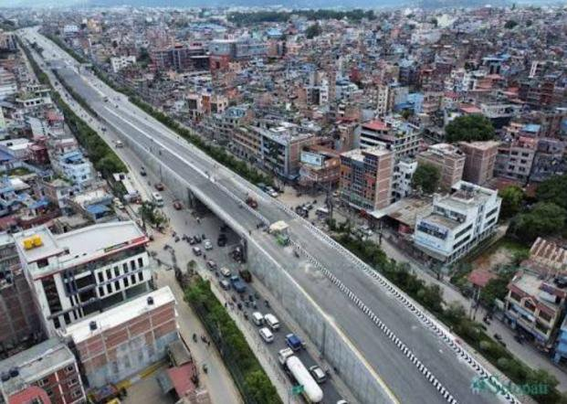

Advantages: Disadvantages:
- Drainage problems are avoided
- Future and lateral expansion is possible
- Potential steep gradient at the entry and exit
- Restriction on sight distance if long vertical curves are not provided
Grade Separation Structures (Underpass)
- A highway is taken below by depressing it below ground level to cross another road/rail road etc.

Advantages: Disadvantages:
- Vehicles on major road are not changing its vertical profile if minor road is taken underground
- No restricting on sight distance
- High cost of construction than overpass
- Drainage problem
Grade Separated Intersection with Interchange
- Intersection in which vehicles moving in one direction of flow may transfer to another direction by the use of connecting roads (Ramps)
- Interchange Facilities
- Direct
- Semi Direct
- Indirect
Types of Ramp Facilities


Semi Direct


Grade Separated Intersection with Interchange
Advantages: Disadvantages:
- Avoids necessity of stopping
- Increasing safety and easiness for turning traffic
- Save travel time and VOC
- Stage construction is possible
- Costly
- Difficult, costly and unfavorable when the topography is not favorable
- Undesirable crests and sags
Types of Interchange
- Trumpet Interchange (Three leg interchange)
- Diamond Interchange
- Cloverleaf Interchange
- Partial Cloverleaf Interchange
- Directional Interchange
- Bridged Rotary (Rotary Interchange)
Trumpet Interchanges

- Trumpet interchanges have been used where one highway terminates at another highway at almost 90o.
- The principal advantages are low construction cost
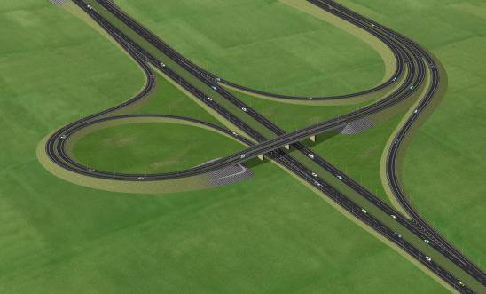
Directional Y


Diamond Interchange
- A diamond interchange is a common type of road junction, used where a freeway crosses a minor road.
- The diamond interchange uses less space therefore suitable for area with narrow ROW major road
- Disadvantage is that a possibility of illegal turnings.

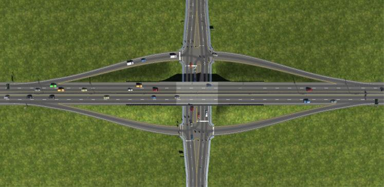
Cloverleaf Interchange
- A cloverleaf interchange is a two-level interchange in which left turns (right turns in left hand driving) are handled by loop ramps.
- Suitable when two high volume and high-speed roads intersect

Advantages: Disadvantages:
- Traffic not impeded
- Direct left turn
- Simple to use
- Require large area
- Right turn require extra distance
- Carriageway larger
Partial Cloverleaf
- Partial clover leaf is a modification that combines some elements of a diamond interchange with one or more loops of a cloverleaf to eliminate only the more critical turning conflicts.
- It provides more acceleration and deceleration space on the freeway.


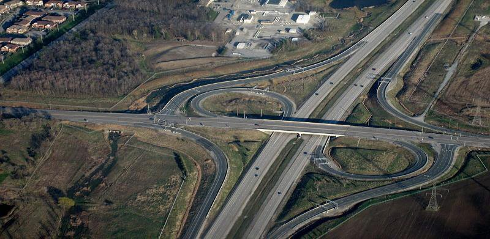
Directional Interchange
- A directional interchange provides direct paths for right turns.

- These interchanges contain ramps for one or more direct or semi direct left turning movements.
2.4 Rotary Intersection
Past Exam Questions on this Topic
- Define spot speed and explain the methods of conducting spot speed study. Write down the advantages and limitations of rotary intersection: [8] (2081 Bhadra, Q2)
Solution
Spot speed = instantaneous speed of a vehicle at a specified point on the road.
Methods of conducting a spot-speed study:
- Manual: stopwatch + short measured base length, or enoscope (mirror box).
- Automatic: pneumatic road tubes, inductive loop detectors, Doppler radar gun, LIDAR speed gun, and video / image-processing systems.
Advantages of a rotary intersection: continuous (stop-free) movement; all crossing manoeuvres converted to merging, weaving and diverging; self-regulating (no signal); eliminates severe right-angle and head-on conflicts; orderly and aesthetic.
Limitations: requires large land area; unsuitable for very high volumes or heavy pedestrian movement; causes delay under heavy flow; not suited to high-speed traffic or steep gradients; costly where land is expensive.
- What are the basic requirements of intersection at grade? Write down the design steps of rotary intersection. (2075 Chaitra, Q1)
Solution
Basic requirements of an at-grade intersection: adequate sight distance, minimum number of conflict points, channelization to guide traffic, low relative speed of crossing streams, adequate capacity, simple and clear layout, and provision for pedestrians, drainage and lighting.
Design steps of a rotary intersection:
- Collect traffic (turning-movement) and design data.
- Select the rotary design speed (usually 30-40 km/h).
- Fix the shape and size of the central island and the rotary radius.
- Determine the weaving length and weaving width.
- Fix entry and exit widths and their radii.
- Check the weaving capacity (Wardrop's formula) against design flow.
- Provide islands, markings, signs, lighting and channelization.
- a) The vehicle arrivals at the section of road are assumed to be Poisson distributed with an average arrival rate of 1 vehicle every 5 minutes. What is the probability of (i) Exactly 3 vehicles arrive in a 15 minute interval (ii) less than 3 vehicles arrive in a 15 minute interval? (iii) More than 3 vehicles arrive in a 15 minute interval? [4] b) Calculate the capacity of rotary with entry and exit width of 8m, the width of non-weaving section is 9m, width of rotary is 12m, length of weaving section is 60m. The ratio of weaving to total traffic in weaving section is 0.7. [4] (2076 Chaitra, Q3)
Solution
(a) Poisson arrivals
Mean arrival rate = 1 vehicle per 5 min · interval of interest = 15 minMean number of arrivals in the interval
m = 15 / 5 = 3 vehicles P(x) = e−m mx / x!Probability of exactly 3 arrivals
P(3) = e−3 × 3³ / 3! = 0.0498 × 27/6 = 0.0498 × 4.5 = 0.224Probability of fewer than 3 arrivals
P(<3) = P(0) + P(1) + P(2) = e−3(1 + 3 + 4.5) = 0.0498 × 8.5 = 0.423Probability of more than 3 arrivals
P(>3) = 1 − P(≤3) = 1 − (0.423 + 0.224) = 0.353(b) Rotary weaving capacity
Weaving width w = 12 m · average entry/exit width e = 8 m · proportion of weaving traffic p = 0.7 · weaving length L = 60 mWardrop's weaving-capacity formula
Qp = 280 w (1 + e/w)(1 − p/3) / (1 + w/L)Substitute
Qp = 280 × 12 × (1 + 8/12) × (1 − 0.7/3) / (1 + 12/60) = 3360 × 1.667 × 0.767 / 1.2 = ≈ 3580 PCU/hP(exactly 3) = 0.224, P(fewer than 3) = 0.423, P(more than 3) = 0.353; the rotary's weaving capacity is ≈ 3580 PCU/h. - Explain the factors to be considered in the timing design of traffic and pedestrian signals. Discuss the design of a rotary intersection. [8] (2078 Bhadra, Q9)
Solution
Factors in signal timing (traffic & pedestrian): approach volumes and saturation flows, pedestrian crossing time (walking speed & road width), minimum green, amber and all-red (clearance) intervals, start-up lost time, cycle-length limits, and signal coordination.
Rotary design factors: design speed, weaving length and width, entry/exit geometry, and weaving capacity.
- a) Define rotary intersection. What are the advantages and disadvantages of rotary intersection? [8] b) A vehicle skids through a distance of 40m before colliding with another parked vehicle; the weight of which is 75 percent of the former After collision both the vehicles skid through 14m before stopping: Compute the initial speed of moving vehicle. Assume coefficient of friction of 0.62. [8] (2068 Baishakh, Q2)
Solution
Rotary intersection = a channelized at-grade intersection with a central island around which all traffic moves one-way (anticlockwise here), converting crossing conflicts into merging, weaving and diverging.
Advantages: continuous stop-free movement, no severe right-angle/head-on conflicts, self-regulating, orderly, aesthetic. Disadvantages: large land area, poor for high volumes/heavy pedestrian flow, delay under heavy traffic, unsuitable at high speeds or steep grades.
Numerical
skid coefficient f = 0.62 · g = 9.81 m/s² · a moving vehicle skids 40 m, strikes a parked vehicle weighing 0.75 × its own weight, and the two then skid 14 m togetherCommon speed of the pair just after impact
v' = √(2 g f d) = √(2 × 9.81 × 0.62 × 14) = 13.06 m/sSpeed of the moving vehicle just before impact
plastic collision, the parked vehicle starts at rest: m · uimpact = (m + 0.75m) v' uimpact = 1.75 × 13.06 = 22.86 m/sInitial speed, adding the 40 m pre-impact skid
u0 = √(uimpact² + 2 g f d) = √(22.86² + 2 × 9.81 × 0.62 × 40) = √(522.6 + 486.6) = √1009.2 = 31.77 m/s = ≈ 114 km/hThe moving vehicle was travelling at about 114 km/h before it began to skid.
Rotary Interchange
- The major highway is taken above or below rotary intersection to separate major through flow
- Advantages:
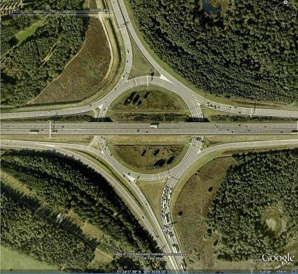
- Relatively less area than other interchange
- Carriageway area is also less
- U-turns are easy
- Disadvantages:
- Capacity is limited by capacity of rotary itself
- Weaving maneuvers
Rotary Intersection20812068
- A specialized form of at grade intersection laid out for movement of traffic at one direction round a central island before proceeding to respective direction.
- Shapes: Circular, squarish with round edge, elliptical, elongated, oval, rectangular, complex

- Advantages:
- Crossing conflicts are converted into weaving
- Reduced severity of crash
- Equal opportunity for all vehicles, self functional
- Continuous and fairly uniform so reduced operational cost
- Disadvantages:
- Requires large land area
- Requires favorable and flat topographical condition
- Right turning traffic has to travel extra distance
- Complex in mixed traffic condition
- Not suitable when pedestrian traffic is high
Guideline for Selecting Rotary
- Right turning traffic is more than 30% of all approaching traffic
- Traffic volumes of intersecting legs are approximately equal
- Highest traffic volume of 3000 PCU/hr and lowest traffic volume is 500 PCU/hr.
- Intersecting legs are more than four but not more than seven
Design Guidelines (IRC: 65-1976)207820762075
- Design Speed
- 30kmph (urban area) to 40kmph (rural area)
- Shape of Central Island
- Depends on the number and layout of the intersecting roads
- Circular, elliptical, complex etc.


Rotary Intersection
Example: 350 630 405 At an urban intersection, two highways of 15m carriageway intersect at right angle with the traffic flow in PCU/hr for design year as mentioned in figure. Design rotary intersection making suitable assumption. 540 350 410
Tasks
- Review road intersection and types
- Review types of at grade intersection
- Review unchannelized and channelized intersections
- Review conflicts in intersection
- Review grade separation structures
- Review grade separated intersections with and without interchanges
- Review rotary intersection and design
2.5 Traffic Control Devices: Traffic Sign, Marking and Islands
Past Exam Questions on this Topic
- What are the general requirements of traffic control devices? Explain the different types of traffic sign. [8] (2082 Baishakh, Q2)
Solution
General requirements of a traffic-control device: it should (1) fulfil a need, (2) command attention, (3) convey a clear and simple meaning, (4) command the respect of road users, and (5) give adequate time for a proper response.
Types: traffic signs (regulatory, warning, informatory), road markings, traffic signals and traffic islands.
- What are the factors affecting night visibility? What are the different types of road marking and traffic island used to regulate and control traffic flow? Explain. [2+3+3] (2076 Ashwin, Q4)
Solution
Factors affecting night visibility: luminance/brightness of the source, contrast between object and background, glare (disability and discomfort), size of the object, and the driver's adaptation/available time.
Types of road markings: longitudinal (centre line, lane lines, edge lines, no-overtaking lines), transverse (stop line, give-way line, pedestrian crossing) and other markings (directional arrows, word messages, hazard/parking markings).
Traffic islands used to regulate and control flow: divisional islands, channelizing islands, pedestrian refuge islands, and rotary (central) islands.
- Describe various types of traffic control devices. Write down the advantages and disadvantages of traffic signal. (2072 Chaitra, Q1)
Solution
Types of traffic signals: traffic-control (stop-go) signals, pedestrian signals, special/flashing signals, and vehicle-actuated signals; control signals may be fixed-time, traffic-actuated (semi- or fully) or manually operated.
Disadvantages of traffic signals: may increase rear-end collisions, cause delay to light/side traffic, are costly to install and maintain, and create hazards on failure or when disobeyed.
Review
- Road intersection and types
- At grade intersections: Configurations, channelized, unchannelized
- Grade separation structures
- Grade separated intersections with and without interchanges
- Rotary intersection and design
Traffic Control Devices2072
- Various devices used to control, regulate and guide traffic.
- Requirement: Attention, meaning, time of response, respect of road users
- Types:
- Traffic Signs
- Road markings
- Traffic Signals
- Traffic Island
Traffic Signs2082
According to Traffic Sign Manual 1997 DoR “Traffic sign means any object, device, line or mark on the road whose object is to convey to road users, restrictions, prohibitions, warnings or information of any description.”
Three main types:
- Regulatory signs
- Warning signs
- Informatory signs
Importance of Traffic Sign
- Give timely warning of hazardous situations
- Regulating traffic by imparting messages to the drivers about the need to stop, give way and limit their speed.
- Give information on highway route, directions and points of intersect
Principle of Traffic Signs
- Should fulfill a need
- A message be presented in simple way
- Sign should be easily noticed by driver
- Symbol and legend on signs must be easy to read;
- Command respect from road users;
- Give adequate time for proper response;
- Long lasting
Basic Requirements of Traffic Signs
- High visibility during both night and day time
- Lettering or symbols of adequate size
- Proper location
- 0.6m away from the edge of the kerb
- 2.0 ~ 3.0m from the edge of the carriageway (Roads without kerb)
Limitation of Traffic Sign
- Easily damaged due to impact or vandalism
- Visual quality degrade over time due to dirt and deterioration
- Require continuous maintenance
Regulatory Signs
- These signs give orders on what they must do and they must not do.
- DoR’s Traffic Sign Manual 1997 have 33 types of Regulatory Signs (A1-A33)
- Regulatory signs are either Mandatory or Prohibitory.
Regulatory Signs (Mandatory)
- The mandatory signs give instructions to drivers about what they must do.
- Most of them are circular with a white symbol and border on a blue background.
- Stop sign and Given Way sign have their own distinct individual shapes.
Regulatory Signs: Mandatory


STOP
Give Way
Ahead only


Restriction
Ends
Turn Left Ahead
Keep Left
Turn Left
Regulatory Signs (Prohibitory)
- The prohibitory signs give instructions to drivers about what they must not do.
- E.g. Max. Speed Limit sign, No Parking sign, No Entry sign
- Most are circular and have a red border.


No Vehicles Over
Height Shown
No Entry
No Trucks


No Vehicles Over Maximum
Gross Weight Shown
Axle Weight Limit
Warning Signs
- Alert driver to danger or potential danger ahead
- Also called danger or cautionary signs
- Require motorists/cyclists to be careful and may need a reduction of speed for their own safety.


Informatory Signs
- These are used to guide the road users along routes about information of destination and distance and provide information to make travel easier, safe and pleasant
- Shape: square or rectangular
- White background with black letters or green background with while letters
Informatory Signs (Direction and Place Identification Sign)


Advance Direction Sign

Route Confirmation Sign
After Junctions
Informatory Signs (Facility Information)


Overnight
Accommodation
Hospital
Refreshments


Informatory Signs (Other Information)


Telephone
Parking
Place
Bridge Name Plate
Supplementary Signs
- Gives additional information to clarify the message given by the main sign
- Mounted 75 mm below main sign
- Usually used with regulatory sign
- E.g. distance to hazard , time


Road Marking or Traffic Marking2076
Road markings are lines, patterns, symbols, words, colors or reflectors on the surface of the pavement or curb or fixed objects near highway to regulate, warn, or guide traffic.
Functions:
- Guide driver in correct positioning of the vehicle in lane
- Guide driver for turning movements at junction
- Give continuous message to driver
Limitations:
- May be hidden by dirt, snow or other vehicles directly over them
- May be worn by sand or gravel.
- Wear due to traffic and the environment and must be maintained or replaced.
- Removal of markings from the pavement is a difficult task
Road Marking: Design
- Light Reflecting paints (when light occurs, it reflects) or reflectorized by adding glass beads (called ballotini) should be used to easily attract the attention of the road user.
- Raise pavement markers to 10-25 mm high
- Colors: white, black, yellow, red
Road Marking: Types
- Pavement Markings
- Kerb (Curb) Markings
- Object Marking
- Reflector Units
Pavement Markings: Longitudinal Markings


Lane Line
Hazard Line
Warning
Barrier Line Do
Not Cross
Edge of Carriageway No Parking
Multi-Lane Road


Pavement Markings: Transverse Markings
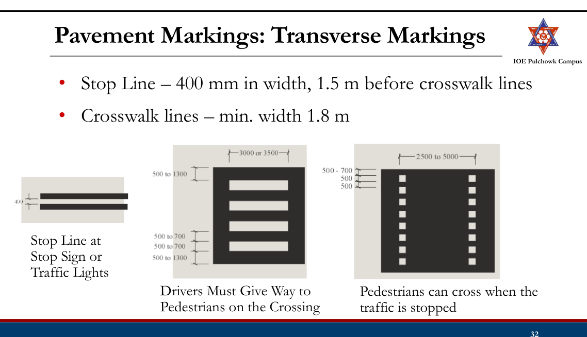
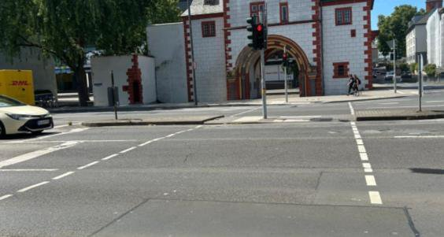
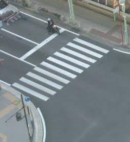
- Diagonal lines – in traffic islands
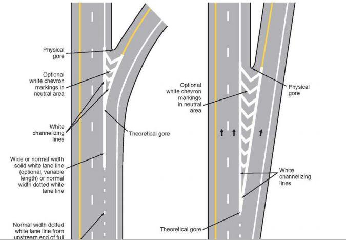

Pavement Markings: Parking Space Markings
- Promotes efficient use of the parking spaces and prevent encroachment on bus stop, roadway etc.
- 100-150 mm wide
Pavement Markings: Lane Arrows
- Guide drivers which lane they should take when approaching a junction
- First one 15 m from junction and second one 45 m from junction

Pavement Markings


Pavement Markings: Words
- Only used in support of standard signs
- Limited to as few words as possible, never > 3 words
- White in color and elongated
- 2.4 m high and 1.8 m at low speed roads
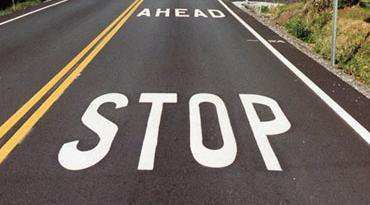

Pavement Markings: Symbol


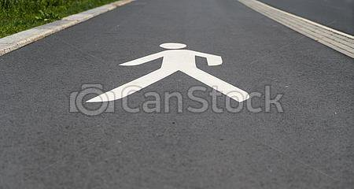
Kerb Marking
- Alternate black and white line painted or chequed black and white on the kerb
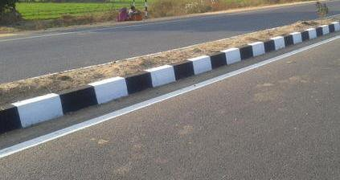
- 500 mm width
- Indicates pavement limit and increase visibility from a long distance


Object Marking
- Piers and abutments, monuments, traffic islands, median sign post, culvert headwalls, trees, poles etch should be marked
- Alternative black and yellow stripes with downwards slope of 45o towards the side of the obstruction
- Width 100 mm
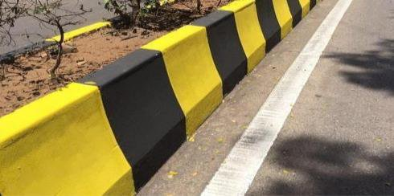

Reflector Unit
- A road marking unit comprising a housing with a light- transmitting window, which automatically flash light in dark or bad weather
- Also known as cat’s eye
- Used in sharp curved roads, intersections, hilly areas, foggy weather and fly-overs.

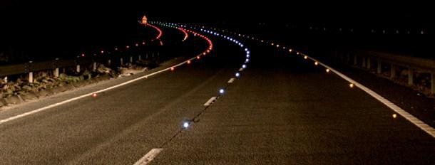
Traffic Island
- Raised areas constructed within carriageway to establish physical channel to guide traffic
- Provided to avoid or minimize major or minor traffic conflict
Types of Traffic Island
- Divisional Island (Median)
- Channelizing Island
- Rotary Island
- Pedestrian refuse
Divisional Island
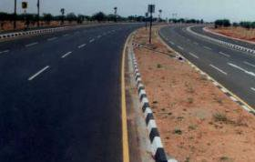
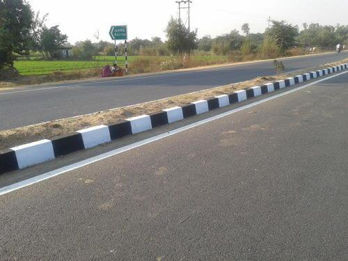
- Separate opposing flow of traffic
- Head on collision are reduced
- Usually installed at road with 4 or more lanes
- To eliminate the head light glare during night driving, the width of this island should be quite large
- Also provides a refuge for pedestrians
Channelizing Island
- To guide traffic into proper channel at intersection.
- To control and direct traffic movement, usually turning traffic

- Should be located with respect to approach that their visibility is clear and the intended path is automatically selected.
- Serve as location for other traffic control devices, refuge islands
Rotary Island
- Rotary island is much larger than the central island of channelized intersection
- All approaching vehicles forced to move around a large central island before weave out into the desired direction
- Crossing maneuver is converted to weaving
Pedestrian Refuse Island
- Located on the cross walks to provide refuse for the pedestrians on wide roads where traffic flow is heavy.
- Serves as safety zones for protection of pedestrian to cross road
- Particularly useful at intersections in urban areas
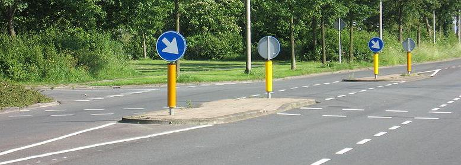
Tasks
- Review traffic signs, importance, limitations, principles, basic requirement
- Review types of traffic signs (regulatory, warning, informatory, supplementary)
- Review road marking, function, limitations, design
- Review types of road marking (pavement marking, kerb marking, object marking, reflector units)
- Review traffic islands (divisional, channelizing, rotary, pedestrian refugee)
2.6 Traffic Signal2072
Why signals are used
At an intersection the conflicting streams cannot be separated in space, so a traffic signal separates them in time: each stream is given exclusive use of the conflict area for part of a repeating cycle. It is the cheapest form of at-grade control that can handle heavy crossing flows, because it needs only simple geometric design.
A signal installation must:
- draw the attention of the road user;
- convey a meaning that is understood at a glance;
- give enough time to respond; and
- impose the minimum waste of time consistent with safety.
Definitions and notation
The whole of signal design rests on a small vocabulary, so it is worth stating it precisely:
| Term | Meaning |
|---|---|
| Cycle | One complete rotation through all the indications provided. |
| Cycle length, C | The time in seconds for one full cycle — the interval from the start of green on one approach to the next start of green on that same approach. |
| Interval | A period during which the indications do not change. The change interval is the amber (yellow) between green and red; the clearance interval is the all-red that follows the amber and lets vehicles already inside the intersection get clear. |
| Green interval, G | The actual duration for which the green is displayed to a movement or set of movements. |
| Red interval, R | The actual duration for which the red is displayed to that movement. |
| Phase | A green interval plus the change and clearance intervals that follow it. Only non-conflicting movements are assigned to the same phase. |
| Lost time | Time during which the intersection is not effectively used by any movement — the start-up reaction of the first driver in the queue after the signal turns green, plus the amber and all-red at the end of the phase. |
| Saturation flow, S | The maximum discharge rate of a compact queue during a fully saturated green, expressed in PCU/h. |
| Normal (design) flow, q | The actual approach demand during the design hour, in PCU/h. |
Classification by purpose
- Traffic control signals — the familiar three-colour system: red = stop, green = go, amber = clearance time.
- Pedestrian signals — installed so pedestrians can cross safely; they show WALK and DON'T WALK indications.
- Special traffic signals — installed at particular locations to warn traffic of a specific situation (flashing beacons, lane-use signals and the like).
Classification of traffic control signals by mode of operation
- Manually operated — worked by a traffic police officer according to the demand seen on the ground; still common at many Nepalese intersections.
- Fixed-time (pre-timed) automatic — the same set of phases and the same cycle time repeat continuously; the settings can only be changed at the controller.
- Traffic-actuated (automatic) — detectors vary the phases and the cycle with the demand. Much more efficient, but also much more costly.
Advantages and disadvantages
Advantages
- Increases the traffic-handling capacity of an at-grade intersection.
- Provides orderly, disciplined movement through the intersection.
- Improves the quality of traffic flow.
- Reduces accidents by eliminating the simultaneous crossing conflicts.
- Gives minor-road traffic a guaranteed chance to cross the continuous major-road stream at reasonable intervals.
- Maintains a reasonable running speed along the major road if the signals in a series are properly co-ordinated (linked / green wave).
Disadvantages
- Failure of the signal — power cut or any other defect — causes confusion, because drivers have come to rely on it.
- Rear-end collisions may increase.
- Improper design or poor location invites violation of the control.
- With fixed-time signals, the natural variation in arrivals means one approach can be queueing while the other wastes its green.
Sections 2.6–2.8 are written from P. M. Parajuli, Complete Manual on Transportation Engineering II, Ch.1 §1.3.2 (book pp.39–51) — the reference cited by the worked solutions below. Lecture 12 of the course deck, which covers this topic, was not available.
Past Exam Questions on this Topic
- Describe various types of traffic control devices. Write down the advantages and disadvantages of traffic signal. (2072 Chaitra, Q1)
Solution
Types of traffic signals: traffic-control (stop-go) signals, pedestrian signals, special/flashing signals, and vehicle-actuated signals; control signals may be fixed-time, traffic-actuated (semi- or fully) or manually operated.
Disadvantages of traffic signals: may increase rear-end collisions, cause delay to light/side traffic, are costly to install and maintain, and create hazards on failure or when disobeyed.
2.7 Warrants for Traffic Signalization
Warrants for installation of a traffic control signal
A signal is not automatically the right answer at a busy junction: it introduces delay to the major stream and can increase rear-end collisions. A signal should therefore not be installed unless at least one of the following warrants is met, and the data supporting it must come from proper traffic engineering studies.
(a) Minimum vehicular volume warrant
- Average volume for eight hours of the day on both approaches of the major street ≥ 650 veh/h (single lane) or 800 veh/h (two or more lanes); and
- on the minor street, in one direction only, ≥ 200 veh/h (single lane) or 250 veh/h (two or more lanes).
If the average approach speed or the 85th-percentile speed on the major street exceeds 60 km/h, or the intersection lies inside a built-up area, these figures may be reduced to 70% of the above.
(b) Interruption of continuous traffic flow on the major road
When the major street carries 1000–1200 veh/h and the minor road, with only 100–150 veh/h in one direction, suffers undue delay or hazard during any eight hours of an average day.
(c) Minimum pedestrian volume warrant
When 150 or more pedestrians per hour cross a major street carrying more than 600 veh/h on both approaches — or 1000 veh/h where the main street has a raised median. The 70% relaxation for high approach speed applies here too.
(d) Accident experience warrant
When the accident record shows that other remedial measures have failed and five or more accidents involving injury or property damage have occurred within a 12-month period. Even then the signal must not seriously disrupt the traffic flow.
(e) Combination of warrants
When no single warrant is satisfied on its own, but two or more of warrants (a), (b) and (c) are each satisfied to the extent of 80% of their stated values.
Sections 2.6–2.8 are written from P. M. Parajuli, Complete Manual on Transportation Engineering II, Ch.1 §1.3.2 (book pp.39–51) — the reference cited by the worked solutions below. Lecture 12 of the course deck, which covers this topic, was not available.
2.8 Traffic Signal Design by Webster Method2082208120802076207520732071
General principles behind the timings
- The red phase of one road is the sum of the green and amber of the other road. Pedestrian crossing time is accommodated inside it when turning movements are barred.
- Near the end of red, amber may be shown together with red — the red–amber or initial amber — meaning "get set". Vehicles must not cross the stop line during it.
- Clearance amber is provided after green, before red, to satisfy two requirements:
- a vehicle approaching the stop line can stop at it, and
- a vehicle already too close to stop at the legal speed can clear the intersection area.
- Green time follows from the peak-hour approach volume, and must clear the queue in most cycles.
Typical design data
- Cycle length for a two-phase signal: mostly 40–60 s.
- Amber: 3–5 s — 3 s up to 50 km/h, 4 s for 50–65 km/h, 5 s for 65–80 km/h.
- Green: of the order of 20 s; red slightly less than the green of the other road.
- Pedestrian clearance is computed at a walking speed of 1.2 m/s.
Method A — trial cycle method
The crudest of the three methods; useful only as a first estimate.
- Count traffic on roads A and B simultaneously for 15 minutes; call the counts N1 and N2.
- Assume a trial cycle length C seconds.
- Number of cycles in the 15-minute period = 900/C.
- Taking a headway of 2.5 s per vehicle, the green times are
- Cycle time C = GA + GB + YA + YB; iterate until the assumed and computed C agree.
Method B — Webster's method (optimum cycle)
Webster's method finds the optimum cycle length C0 — the cycle that gives the least total delay at the intersection. It is the method the examiners ask for most often. The field work is to estimate, for every approach:
- the saturation flow S (PCU/h), by timing the discharge of a compact queue during a fully used green; and
- the normal flow q (PCU/h) during the design hour.
In the absence of field data the saturation flow may be taken as 160 PCU/h per 0.3 m of approach width. Mixed traffic must be converted to PCU separately for the normal flow and for the saturation flow.
For each phase take the critical (highest) ratio of normal to saturation flow:
The total lost time per cycle is
The optimum cycle and the green split are then
Y must be less than 1, otherwise the intersection is over-saturated and no cycle length can clear it. The same formulation extends to any number of phases.
Method C — design on the basis of pedestrian crossing time
Used when a two-phase signal at a cross-road has to be designed together with pedestrian signals — the situation in most of the past questions.
- Choose the amber from the approach speed: 3 s up to 50 km/h, 4 s for 50–65 km/h, 5 s for 65–80 km/h.
- Pedestrian clearance time for a road = its carriageway width ÷ 1.2 m/s.
- Minimum red on a road = pedestrian clearance time for that road + the initial walk interval (7 s where a pedestrian signal is installed, else 5 s).
- Minimum green on a road = (pedestrian clearance of the cross road + initial interval) − the amber of that road. Equivalently, min green of one road = min red of the cross road − that road's amber.
- Increase the green of the heavier road in proportion to the approach volume per lane:
- Cycle length C = GA + YA + GB + YB, then round up to the next multiple of 5 s. Distribute the excess between the two greens in proportion to their volumes.
- Red on a road = green + amber of the other road.
- For the pedestrian signals: DON'T WALK on a road = the vehicular red of the other road, and
Timings are finally expressed as a percentage of the cycle, because controller settings are made in per cent, and checked on site during the peak hour.
Method D — signal timings as per IRC guidelines
IRC's guidance combines the pedestrian criterion with a queue-clearance check and with Webster's formula, and is the most complete of the three procedures.
- Pedestrian walking speed 1.2 m/s and initial walk time 7 s. The pedestrian green so obtained is the minimum green for the vehicular traffic on the minor and major roads.
- The green for the major road is increased in proportion to the traffic on the two approaches.
- Cycle time is then computed allowing 2 s of amber for each phase.
- Check the queue clearance green for each approach lane: the first vehicle takes 6 s and every subsequent PCU 2 s; the minimum green so found is limited to 16 s.
- Compute the optimum cycle from Webster's formula. Saturation flow may be assumed as below; above 5.5 m take 525 PCU/h per metre of width.
- Lost time comes from the amber, the inter-green and an initial delay of 4 s for the first vehicle on each leg.
- Revise the cycle and the phases in the light of steps (4) and (5), and set the cycle to a convenient multiple of 5 s.
| Approach width, kerb to centre line (m) | 3.0 | 3.5 | 4.0 | 4.5 | 5.0 | 5.5 |
|---|---|---|---|---|---|---|
| Saturation flow (PCU/h) | 1850 | 1890 | 1950 | 2250 | 2550 | 2990 |
Sections 2.6–2.8 are written from P. M. Parajuli, Complete Manual on Transportation Engineering II, Ch.1 §1.3.2 (book pp.39–51) — the reference cited by the worked solutions below. Lecture 12 of the course deck, which covers this topic, was not available.
Past Exam Questions on this Topic
- Design an isolated traffic Signal at an intersection of road X (15 m width), and road Y (10.5 m width) The highest observed traffic volume per lane is 250 vehicles per hour on road X and 200 vehicles per hour on road Y. The approach speeds are 50 km/h for road X and 35 km/h for road Y. Design the traffic and pedestrian signal timings for this intersection. Also, prepare a phase diagram showing both vehicular and pedestrian signal timing. [8] (2082 Bhadra, Q4)
Solution
Isolated two-phase signal with pedestrian indications · Road X 15 m wide, approach speed 50 km/h, 250 veh/h per lane · Road Y 10.5 m wide, approach speed 35 km/h, 200 veh/h per laneAmber from the approach speed
3 s up to 50 km/h , 4 s for 50–65 , 5 s for 65–80 both approaches ≤ 50 km/h → AX = AY = 3 sPedestrian clearance time at 1.2 m/s
CIX = 15 / 1.2 = 12.50 s CIY = 10.5 / 1.2 = 8.75 sMinimum red = clearance + 7 s initial walk
RX = 12.50 + 7 = 19.50 s RY = 8.75 + 7 = 15.75 sMinimum green from the pedestrian criterion
green of one road = other road's red − own amber GY = RX − AY = 19.50 − 3 = 16.50 s GX = RY − AX = 15.75 − 3 = 12.75 sAdjust for approach volume
road X carries the higher volume, so anchor road Y at its pedestrian minimum and scale road X by the volume ratio: GX = GY × (nX/nY) = 16.50 × (250/200) = 20.63 s 20.63 > 12.75 → road X pedestrian minimum satisfied ✓Cycle length, rounded up to a multiple of 5 s
C = GX + AX + GY + AY = 20.63 + 3 + 16.50 + 3 = 43.13 s adopt C = 45 s distribute the excess 45 − 43.13 = 1.87 s by volume: GX = 20.63 + (250/450) × 1.87 = 21.67 s GY = 16.50 + (200/450) × 1.87 = 17.33 sRed times
RX = GY + AY = 17.33 + 3 = 20.33 s RY = GX + AX = 21.67 + 3 = 24.67 sPedestrian signal timings
DON'T WALK = the parallel road's red WALK = C − DON'T WALK − clearance PSX: DW = RY = 24.67 s , W = 45 − 24.67 − 12.50 = 7.83 s PSY: DW = RX = 20.33 s , W = 45 − 20.33 − 8.75 = 15.92 sCycle 45 s — phase 1: road X green 21.67 s + amber 3 s; phase 2: road Y green 17.33 s + amber 3 s. Pedestrian WALK is 7.83 s across X and 15.92 s across Y.Marsani's approach-speed pedestrian-crossing procedure (pp. 73-75); the worked text uses the same 1.2 m/s walking speed, 7 s initial walk and 3/4/5 s amber rule.
- An isolated signal with pedestrian indication is to be installed on a right angled intersection with road A,l8m wide and road B, 12m wide. The heaviest volume per hour for each lane of road A and B are 300 and 250, respectively. The approach speeds are 55 and 40 kmph for road A and B respectively. Design the timing of traffic and pedestrian signals. [8] (2081 Baishakh, Q4)
Solution
Isolated two-phase signal with pedestrian indications at a right-angled intersection · Road A 18 m wide, approach speed 55 km/h, 300 veh/h per lane · Road B 12 m wide, approach speed 40 km/h, 250 veh/h per laneAmber from the approach speed
Road A 55 km/h (50–65 band) → AA = 4 s Road B 40 km/h (≤ 50) → AB = 3 sPedestrian clearance time at 1.2 m/s
CIA = 18 / 1.2 = 15 s CIB = 12 / 1.2 = 10 sMinimum red = clearance + 7 s initial walk
RA = 15 + 7 = 22 s RB = 10 + 7 = 17 sMinimum green from the pedestrian criterion
GB = RA − AB = 22 − 3 = 19 s GA = RB − AA = 17 − 4 = 13 sAdjust for approach volume
road A carries the higher volume, so anchor road B at 19 s: GA = 19 × (300/250) = 22.8 s 22.8 > 13 ✓Cycle length, rounded up to a multiple of 5 s
C = 22.8 + 4 + 19 + 3 = 48.8 s adopt C = 50 s distribute the excess 1.2 s by volume: GA = 22.8 + (300/550) × 1.2 = 23.45 s GB = 19.0 + (250/550) × 1.2 = 19.55 sRed times
RA = GB + AB = 19.55 + 3 = 22.55 s RB = GA + AA = 23.45 + 4 = 27.45 sPedestrian signal timings
PSA: DW = RB = 27.45 s , W = 50 − 27.45 − 15 = 7.55 s PSB: DW = RA = 22.55 s , W = 50 − 22.55 − 10 = 17.45 sCycle 50 s — phase 1: road A green 23.45 s + amber 4 s; phase 2: road B green 19.55 s + amber 3 s. Pedestrian WALK is 7.55 s across A and 17.45 s across B.Marsani's approach-speed pedestrian-crossing procedure (pp. 73-75): amber 4 s for 50–65 km/h and 3 s for ≤ 50 km/h, 1.2 m/s walk, 7 s initial walk.
- Using the data in the table below, come up with the cycle length and actual green for a 2-phase signal. Assume a lost time per phase of 3 seconds, yellow time of 3 seconds and all-red time of 4 sec. [8] (2080 Bhadra, Q3)
Approach flows & saturation flows Approach East North West South Flow (veh/hr) 488 338 115 217 Saturation flow (veh/hr) 1725 1725 1725 1725 Solution
Two-phase signal · phase 1 = North–South, phase 2 = East–West · saturation flow S = 1725 veh/h on every approach · approach flows 338 and 217 (N–S), 488 and 115 (E–W) veh/h · lost time 3 s per phase · amber 3 s · all-red 4 sCritical flow ratio of each phase
take the highest q/S of the approaches in that phase: y1 = max(338, 217)/1725 = 338/1725 = 0.196 y2 = max(488, 115)/1725 = 488/1725 = 0.283 Y = 0.196 + 0.283 = 0.479Total lost time per cycle
L = 2 × 3 (start-up) + 4 (all-red) = 10 s the 3 s amber is counted as effective greenOptimum cycle length
C0 = (1.5 L + 5) / (1 − Y) = (1.5 × 10 + 5) / (1 − 0.479) = 20 / 0.521 = 38.4 s → adopt ≈ 40 sGreen split
effective green = C0 − L = 40 − 10 = 30 s g1 = (0.196/0.479) × 30 = 12.3 s g2 = (0.283/0.479) × 30 = 17.7 sCycle 40 s with effective greens of 12.3 s (N–S) and 17.7 s (E–W). The displayed green is the effective green plus the start-up loss minus the amber; finish with the phase diagram.The amber is taken as effective green and one all-red is counted per cycle. If both all-red intervals and the amber losses are counted instead, L and hence C0 increase accordingly.
- The average normal flow of traffic on the cross roads 1 and 2 during design period are 450 and 350 PCU/hr. The saturation headway on these roads are estimated as 2.5 sec and 3.75 sec respectively. The all red time required for pedestrian crossing is 15 sec. Design two phase signal by Webster's method with neat phase diagram. Take amber time of 2 sec on each phase for clearance and start-up loss time of 2 sec and 3 sec for roads 1 & 2 respectively. [8] (2076 Chaitra, Q4)
Solution
Two-phase signal · design flows 450 and 350 PCU/h · saturation headways 2.5 s and 3.75 s · start-up losses 2 s and 3 s · ambers 2 s and 2 s · all-red 15 sSaturation flow of each approach
S = 3600 / saturation headway S1 = 3600 / 2.50 = 1440 PCU/h S2 = 3600 / 3.75 = 960 PCU/hCritical flow ratios
y1 = 450 / 1440 = 0.313 y2 = 350 / 960 = 0.365 Y = Σy = 0.313 + 0.365 = 0.678Total lost time per cycle
L = Σ(start-up) + Σ(amber) + all-red = (2 + 3) + (2 + 2) + 15 = 24 sOptimum cycle length
C0 = (1.5 L + 5) / (1 − Y) = (1.5 × 24 + 5) / (1 − 0.678) = 41 / 0.322 = ≈ 127 sGreen split
effective green = C0 − L = 127 − 24 = 103 s g1 = (y1/Y)(C0 − L) = (0.313/0.678) × 103 = ≈ 47.5 s g2 = (y2/Y)(C0 − L) = (0.365/0.678) × 103 = ≈ 55.5 sCheck
g1 + g2 + ambers + start-up + all-red = 47.5 + 55.5 + (2+2) + (2+3) + 15 = 127 s = C0 ✓Cycle 127 s with greens of 47.5 s (road 1) and 55.5 s (road 2). Finish with a neat phase diagram.Lost-time accounting per Marsani (L = Σstart-up + Σamber + all-red).
- The average normal flow of traffic on cross roads A and B, of width 7m both, during the design period are 400 and 250 PCU/hr. The saturation flow values on these roads are estimated as 1250 and 1000 PCU per hour respectively. The all-red time is provided for pedestrian crossing with walking speed 1 m/sec and initial walk time 6 sec. Design a two phase traffic signal by Webster's method. [8] (2075 Chaitra, Q4)
Solution
Roads A and B, each 7 m wide · design flows 400 and 250 PCU/h · saturation flows 1250 and 1000 PCU/h · amber 2 s per phase · pedestrian walking speed 1 m/s with a 6 s initial walk intervalFlow ratios
yA = qA/SA = 400 / 1250 = 0.32 yB = qB/SB = 250 / 1000 = 0.25 Y = Σy = 0.57All-red time from the pedestrian crossing requirement
crossing time = width / walking speed = 7 / 1 = 7 s initial walk interval = 6 s R = 6 + 7 = 13 sTotal lost time
L = nℓ + R (ℓ = 2 s amber, n = 2 phases) = 2 × 2 + 13 = 17 sOptimum cycle length
C0 = (1.5 L + 5) / (1 − Y) = (1.5 × 17 + 5) / (1 − 0.57) = 30.5 / 0.43 = ≈ 71 sGreen split
effective green = C0 − L = 71 − 17 = 53.9 s gA = (0.32/0.57) × 53.9 = ≈ 30.3 s gB = (0.25/0.57) × 53.9 = ≈ 23.7 sCheck
gA + gB + 2 × amber + all-red = 30.3 + 23.7 + 4 + 13 ≈ 71 s = C0 ✓Cycle 71 s with greens of 30.3 s (road A) and 23.7 s (road B), separated by 2 s ambers and a 13 s pedestrian all-red.Matches Marsani's worked signal-design example exactly (400/250 flows, S = 1250/1000, 7 m width, 1 m/s walk, 6 s initial walk): Y = 0.57, C0 = 70.9 s, gA = 30.3 s, gB = 23.7 s.
- A four-legged right angled intersection is to be signalized with a fixed time 2-phase signal. The design hour flow and saturation flow are given in the table below. The lost time is 2 seconds per phase due to starting delays and the amber times for north-south and east-west are 3 seconds and 4 seconds respectively. Determine the optimum cycle time and allocate the green times to the two phases. (2075 Ashwin, Q4)
Design-hour flow & saturation flow Approach North (N) South (S) East (E) West (W) Design hour flow 900 500 800 700 Saturation flow 2500 2000 3200 3000 Solution
Four-legged intersection, two phases · N–S flows 900 and 500 PCU/h with saturation flows 2500 and 2000 · E–W flows 800 and 700 PCU/h with saturation flows 3200 and 3000 · start-up losses 2 s and 2 s · ambers 3 s and 4 sEach phase is governed by its critical approach — the one with the highest q/S ratio, not the highest flow.
Critical flow ratio of each phase
phase 1 (N–S): max(900/2500, 500/2000) = max(0.360, 0.250) = 0.360 phase 2 (E–W): max(800/3200, 700/3000) = max(0.250, 0.233) = 0.250 Y = 0.360 + 0.250 = 0.610Total lost time
L = Σ(start-up) + Σ(amber) = (2 + 2) + (3 + 4) = 11 sOptimum cycle length
C0 = (1.5 × 11 + 5) / (1 − 0.610) = 21.5 / 0.390 = ≈ 55 sGreen split
effective green = C0 − L = 55 − 11 = 44 s g1 = (0.360/0.610) × 44 = ≈ 26 s g2 = (0.250/0.610) × 44 = ≈ 18 sCycle 55 s with effective greens of 26 s (N–S) and 18 s (E–W). The displayed green is G = g − amber + start-up loss. - The average normal flow of traffic on cross roads A and B are 400 and 250 PCU per hour. The saturation headway on these roads are 3 sec and 4 sec respectively. The all-red time required for pedestrian crossing is 15 sec. Design a two phase traffic signal by Webster's method. [8] (2073 Shrawan, Q2)
Solution
Two-phase signal · design flows 400 and 250 PCU/h · saturation headways 3 s and 4 s · amber 2 s per phase · all-red 15 s for pedestrian crossingSaturation flow of each approach
S = 3600 / h S1 = 3600 / 3 = 1200 PCU/h S2 = 3600 / 4 = 900 PCU/hFlow ratios
y1 = 400 / 1200 = 0.333 y2 = 250 / 900 = 0.278 Y = Σy = 0.611Total lost time
L = 2n + R (n = 2 phases, R = all-red) = (2 + 2) + 15 = 19 sOptimum cycle length
C0 = (1.5 L + 5) / (1 − Y) = (1.5 × 19 + 5) / (1 − 0.611) = 33.5 / 0.389 = ≈ 86 sGreen split
effective green = C0 − L = 86 − 19 = 67 s g1 = (0.333/0.611) × 67 = ≈ 36.5 s g2 = (0.278/0.611) × 67 = ≈ 30.5 sCheck
g1 + g2 + ambers + all-red = 36.5 + 30.5 + 4 + 15 = 86 s = C0 ✓Cycle 86 s with greens of 36.5 s and 30.5 s, 2 s ambers and a 15 s all-red pedestrian interval.Lost-time convention L = 2n + R (amber + all-red) and the whole procedure follow Marsani's worked Webster example (q = 375/225, S = 1050/850, R = 10 s → Y = 0.62, C0 = 68.5 s).
- An isolated signal with pedestrian indication is to be installed on a right-angled intersection with road A 15 m wide and road B 12 m wide. The heaviest volume per hour for each lane of road A and road B are 300 and 250 respectively. The amber times for roads A and B are 3 and 2 seconds respectively. Design the timings of the traffic and pedestrian signals. [8] (2071 Chaitra, Q4)
Solution
Isolated two-phase signal with pedestrian indications · Road A 15 m wide, 300 veh/h per lane, amber 3 s · Road B 12 m wide, 250 veh/h per lane, amber 2 sPedestrian clearance time at 1.2 m/s
CIA = 15 / 1.2 = 12.5 s CIB = 12 / 1.2 = 10.0 sMinimum red = clearance + 7 s initial walk
RA = 12.5 + 7 = 19.5 s RB = 10.0 + 7 = 17.0 sMinimum green from the pedestrian criterion
GB = RA − AB = 19.5 − 2 = 17.5 s GA = RB − AA = 17.0 − 3 = 14.0 sAdjust for approach volume
road A carries the higher volume, so anchor road B at 17.5 s: GA = 17.5 × (300/250) = 21 s 21 > 14 ✓Cycle length, rounded up to a multiple of 5 s
C = 21 + 3 + 17.5 + 2 = 43.5 s adopt C = 45 s distribute the excess 1.5 s by volume: GA = 21.0 + (300/550) × 1.5 = 21.82 s GB = 17.5 + (250/550) × 1.5 = 18.18 sRed times
RA = GB + AB = 18.18 + 2 = 20.18 s RB = GA + AA = 21.82 + 3 = 24.82 sPedestrian signal timings
PSA: DW = RB = 24.82 s , W = 45 − 24.82 − 12.5 = 7.68 s PSB: DW = RA = 20.18 s , W = 45 − 20.18 − 10.0 = 14.82 sCycle 45 s — phase 1: road A green 21.82 s + amber 3 s; phase 2: road B green 18.18 s + amber 2 s. Pedestrian WALK is 7.68 s across A and 14.82 s across B.Marsani's approach-speed pedestrian-crossing procedure (pp. 73-75); the amber values are those given in the question, with 1.2 m/s walking speed and a 7 s initial walk.
2.9 Traffic Calming Measures
Review
- Traffic Signal, advantages, disadvantages, types of operational control, warrants, design using webster’s method
Traffic Calming
- Traffic calming is a set of engineering measures and devices that reduce the negative effects of motor vehicles in built-up areas.
- The objective is to improve safety, enhance livability and protecting the environment.
Traffic Calming Measures
- Traffic calming measures generally refers to local speed control and other measures of traffic restraints to discourage unnecessary through traffic and restrict or divert heavy or commercial vehicles where appropriate but may more widely include network planning, parking policies and stimulating the alternative transport modes.
- Can be broadly classified according to the following structures:
- Changes in vertical alignments
- Changes in horizontal alignments
- Other measures
Changes in Vertical Alignment
- These measures change the road surface elevation, causing drivers to reduce speed for a comfortable ride.
- Most effective and reliable for speed reduction (IRC, 2018)
- Eg: Speed humps, speed tables, rumble strips, uneven road surface, raised pedestrian crossing, raised intersections
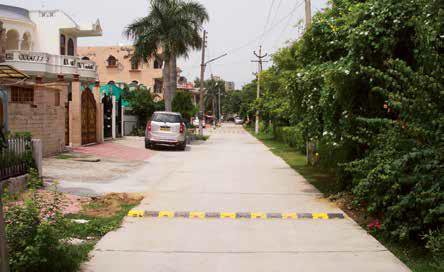
Rumble strips
Speed hump
Uneven road surface
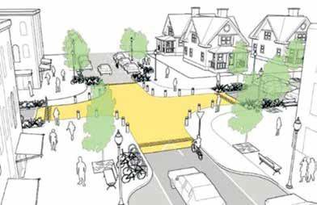
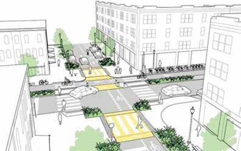
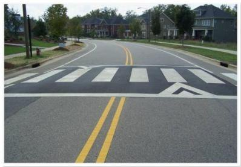
Raised intersection
Raised pedestrian crossings
Changes in Horizontal Alignment
- These measures alter the horizontal path of the roadway, forcing drivers to slow down by changing direction or narrowing the travel path.
- However, are less effective than vertical ones (IRC, 2018)
- Eg: Lane narrowing, curb extension, chicanes, parking facilities, pedestrian medians, roundabouts, junction area reduction

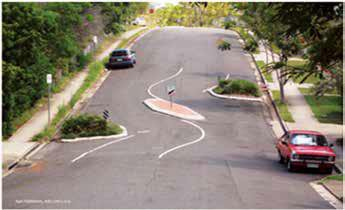
Chicane
Lane narrowing
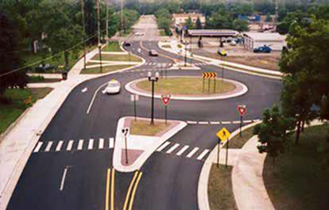
Other measures
- Measures that help to force drivers slowing down, manage traffic flow or restrict certain vehicles without necessarily changing the road geometry.
- Eg: Gates, partial or total road closure, speed control traffic lights, driver’s feedback sign, road marking and surface treatments, road lighting


Driver’s feedback sign
Gates
2.10 Importance and Design of Street Lighting
Past Exam Questions on this Topic
- What are the basic requirements of intersection at grade? Mention the factors affecting night visibility at road. How much is the recommended lateral offset of the lighting poles at the road? Explain with reasoning: [3+3+2] (2082 Bhadra, Q3)
Solution
Basic requirements of an at-grade intersection: adequate sight distance, minimum number of conflict points, channelization to guide traffic, low relative speed of crossing streams, adequate capacity, simple and clear layout, and provision for pedestrians, drainage and lighting.
Factors affecting night visibility: brightness/luminance of source, contrast, glare, size of object, and adaptation time of the eye.
Lateral offset of lighting poles: poles are placed clear of the carriageway - a lateral offset of about 0.3 m beyond the kerb face (outside the clear zone) is recommended so that poles do not become a collision hazard, with mounting height at least equal to the road width for full coverage.
Exact recommended offset for local practice should be read from the design Manual.pdf (street-lighting section).
- Explain the method to determine the spacing of street lights. Explain about the different types of parking. [8] (2082 Baishakh, Q1)
Solution
Spacing of street lights. From the required average illumination E (lux): E = (lamp lumens × CU × MF)/(spacing s × road width w), so s = (lumens × CU × MF)/(E × w). Spacing also depends on mounting height (spacing/height ratio ≈ 3-4) and the luminaire's light distribution.
Layout systems: single-side, staggered, central (median) and opposite (twin) arrangements.
- What are the factors affecting night visibility? What are the different types of road marking and traffic island used to regulate and control traffic flow? Explain. [2+3+3] (2076 Ashwin, Q4)
Solution
Factors affecting night visibility: luminance/brightness of the source, contrast between object and background, glare (disability and discomfort), size of the object, and the driver's adaptation/available time.
Types of road markings: longitudinal (centre line, lane lines, edge lines, no-overtaking lines), transverse (stop line, give-way line, pedestrian crossing) and other markings (directional arrows, word messages, hazard/parking markings).
Traffic islands used to regulate and control flow: divisional islands, channelizing islands, pedestrian refuge islands, and rotary (central) islands.
- What are the causes of accident and how can accidents be prevented? Describe briefly the factors influencing street light design. (2075 Chaitra, Q3)
Solution
Causes of accidents: road-user (over-speeding, drunk/fatigued driving, wrong overtaking, rule violation), vehicle (brake/tyre/steering/light defects, overloading), road (poor geometry, inadequate sight distance, slippery surface, poor markings) and environment (rain, fog, glare, poor light).
Prevention - the 3 E's: Engineering (geometry, signs, lighting, road furniture), Enforcement (speed and traffic-law enforcement) and Education (road-safety awareness and training).
- What are the basic requirements of intersection at grade? Mention the importance of street lighting. Explain the different types of traffic islands. How is accident study carried out? Two vehicles A and B approaching at right angles, vehicle A from West and vehicle B from south, collide with each other. After the collision, vehicle A skids in a direction 49° N of W and vehicle B skids 27° E of N. The initial skid distances of vehicles A and B are 37 m and 19 m respectively before collision. If the weight of vehicle A is 4 tonne and vehicle B is 6 tonne, and the skid distances after collision for vehicle A is 15 m and for vehicle B is 36 m, calculate the initial speeds of the vehicles if the average skid resistance of the pavement is found to be 0.55. (2075 Ashwin, Q1)
Solution
Basic requirements of an at-grade intersection: adequate sight distance, minimum conflict points, channelization to guide traffic, adequate capacity, low relative speed, clear and simple layout, provision for pedestrians and proper drainage/lighting.
Importance of street lighting: improves night visibility & safety, reduces night accidents, aids pedestrian security, improves traffic flow and comfort, and enhances aesthetics.
Types of traffic islands: divisional islands, channelizing islands, pedestrian refuge islands, and rotary (central) islands.
Accident study is carried out by collecting accident data (spot maps, collision & condition diagrams), analysing causes (road user, vehicle, road, environment), and applying remedial 3-E measures (Engineering, Enforcement, Education).
Collision numerical
skid coefficient f = 0.55 · vehicle A 4 t, vehicle B 6 t · post-collision skid 15 m (A) and 36 m (B) · pre-collision skid 37 m (A) and 19 m (B) · deflections A 49° N of W and B 27° E of NSpeeds just after the collision
v = √(2 g f d) vA' = √(2 × 9.81 × 0.55 × 15) = 12.72 m/s vB' = √(2 × 9.81 × 0.55 × 36) = 19.71 m/sMomentum conservation to recover the impact speeds
resolve along E–W and N–S using the given deflection angles: E–W: mAuA = mAvA' cos49° + mBvB' sin27° N–S: mBuB = mAvA' sin49° + mBvB' cos27°Add the pre-collision skid to get the original speeds
u0 = √(uimpact² + 2 g f dpre) A over dpre = 37 m , B over dpre = 19 mThe weights (A = 4 t, B = 6 t) enter only as the mass ratio in the momentum equations, so they need not be converted to newtons.
- What are the importances of street lighting? Describe the factors affecting street light design. [8] (2072 Chaitra, Q2)
Solution
Importance of street lighting: improves night visibility and safety, reduces night accidents, aids pedestrian movement and security, improves traffic flow and comfort, and enhances aesthetics.
Factors affecting street-light design: required illumination level (lux), mounting height, spacing, lateral overhang, carriageway width, lamp type/lumen output, coefficient of utilization, maintenance factor, and uniformity of illumination.
Street Lighting
- Crash rate is higher at night.
- Street lighting is primarily intended to enable the road users to see accurately and easily the carriageway and the immediate surroundings in darkness.
Importance of Street Lighting20752072
- Enable road user to see accurately carriageway and surrounding
- Reduce the strain on night driving
- Enhance comfort in driving
- Reduces glare problem
- Reduction in crash rates
- Improves the efficiency of traffic operation so improved traffic flow
- Pedestrians get better visibility, safety and security
- Indirect benefits like reduction of crime, extension of business hours, improved aesthetic appearance
Factors Influencing Night Visibility20822076
- Amount and distribution of light flux from the lamps
- Size of object
- Brightness of object
- Brightness of the background
- Reflecting characteristics of the pavement surfaces
- Glare on the eyes of the driver
- Time available to see an object
- Weather conditions such as fog, dust, smoke, rain etc.
Requirement of Level of Illumination of Roads
- Adequate to safe driving without headlights
- On residential and non-traffic streets, the lighting be suited to the needs of pedestrian
- In ideal case the lights should be sited in such a way that the bright patches link up to cover the entire road surface.
- The average level of illumination for roads with fast moving vehicles may be 20 to 30 lux, and mixed traffic may be 4 to 8 lux
- As per NRS, level of illumination should be 30 lux on important high speed roads and 15 lux on other main roads.
- ISI (IS1944) Recommendation Classification of lighting Installation Type of Road Average level of Illumination on road (lux) Group A1 Important traffic routes carrying fast traffic Group A2 Other main roads carrying mixed traffic like main city streets, arterial roads Secondary roads with considerable traffic like principal local traffic routes, shopping streets Group B1 Group B2 Secondary routes with light traffic
Design of Lighting System20802075
- Determination of level of illumination required
- Choice of lamp
- Luminaire distribution of light
- Spacing of lighting units
- Height and overhang of mounting
- Lateral placement
- Lighting layout
Design: Determination of Level of Illumination Required
- Done by assessing the facility to be lighted
- Requirement for different roads (NRS, IS1944 Recommendation)
Design: Choice of Light Source (Lamp)
- The choice of the lamp depends on its light flux.
- The choice of lamp is also governed by initial cost, life, color, rendering quality, wattage, brightness, efficiency, operation and maintenance cost etc.
- Tungsten filament 8 – 14 lumens per watt, short life 1000 hrs, very low efficiency and cheapest

- 50 to 70 lumens per watt, life 6000 hrs, good rendering properties Sodium vapor lamp
- 100 to 120 lumens per watt, life 4 years, very energy efficient

Mercury vapor lamp

- 23 to 60 lumens per watt, life 7500 hrs, energy efficient and contains mercury Mercury Halide lamp
- 75 to 100 lumens per watt, life 6,000–15,000 hrs, energy efficient

LED lamp
- 130 lumens per watt, life 60000 to 100000 hrs, highly energy efficient, white light

Design: Luminaire Distribution of Light
- The distribution should be downward so that max. percentage of light is utilized for illuminating pavement and adjacent areas
- Light distribution should produce maximum uniformity of pavement brightness.
- Light distribution should cover the pavement, the kerbs and provide adequate lighting on adjacent area i.e. 3~5 m beyond the pavement edge.

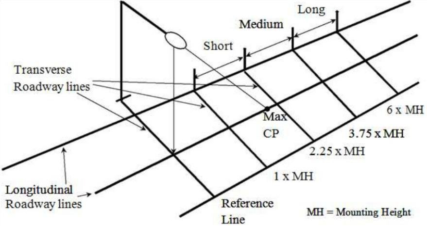
Design: Lateral Light Distribution
Type I (Two way lateral distribution)
- Luminaire mounted at the center of area
- Up to 1 MH in front of and behind luminaire
- Lateral spread of 15 degrees on either side of roadway axis
- Suitable for narrow streets
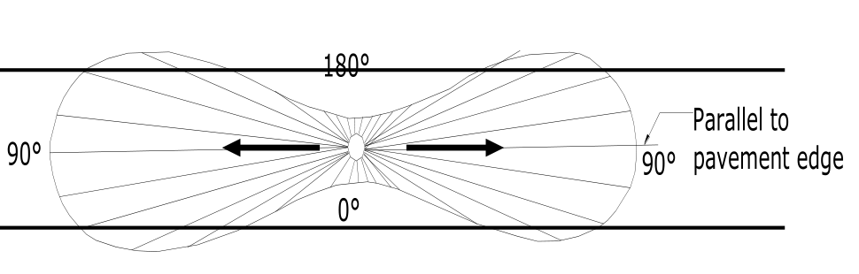
Type II (Narrow asymmetrical lateral distribution)
- Luminaries located at or near the side of relatively narrow roadways of width 1.0 - 1.75 MH in front of luminaries
- Lateral spread of 25 degrees
- Mostly used on smaller side streets or jogging paths.
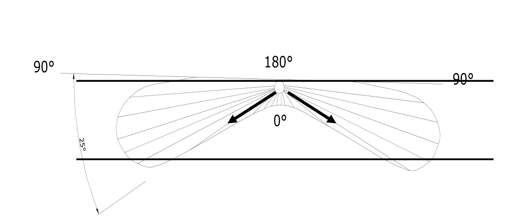
Type III (Medium asymmetrical lateral distribution)
- Lateral spread around 45 degrees
- Luminaries mounted at or near the side of roadways, where the width does not exceed 2.75 times the mounting height.
- Suitable at parking areas and other areas where a larger area of lighting is required
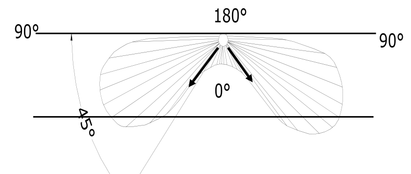
Type IV (Wide asymmetrical lateral distribution)
- Lateral spread around 60 degree and semicircular distribution
- Placed at side of road, where the roadway width < 3.7 times the mounting height.
- Suitable at wide roads and the perimeter of parking areas and businesses
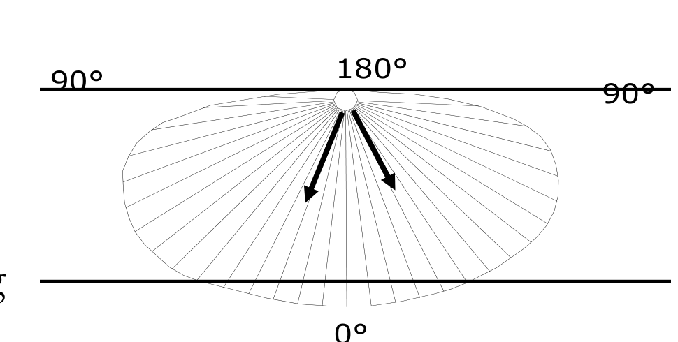
Type V (Normal symmetrical distribution)
- Produces symmetric circular or square distribution that has the same intensity at all angles
- Luminaries mounting at or near center
- Suitable at center wide roadways, center islands of parkway, and intersections
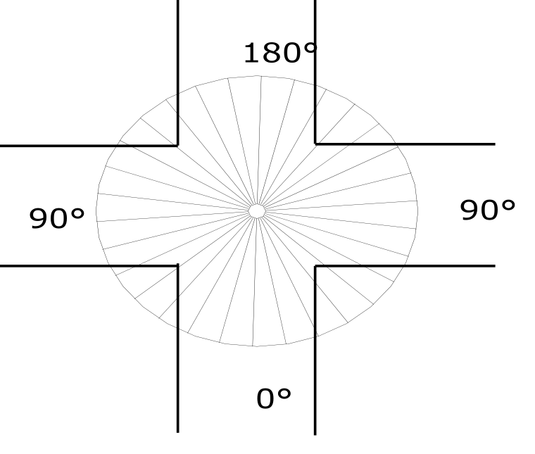
Design: Longitudinal Light Distribution
Short distribution: The maximum candlepower beam strikes the roadway surface between 1.0 and 2.25 mounting heights from the luminaire.
Medium distribution: The maximum candlepower beam strikes the roadway surface between 2.25 and 3.75 mounting heights from the luminaire.
Long distribution: The maximum candlepower beam strikes the roadway surface between 3.75 and 6.0 mounting heights from the luminaire.
Design: Spacing of Lights2082

Utilization Factor:
- The fraction of the luminous flux coming from a luminaire that reaches street/road; Street Coefficient of Utilization (%)
- It depends on efficiency of luminaries, distribution of luminaries, reflectance of room, geometry of the space
- Utilization factor curves for a luminaire are developed as a function of ratio of transverse distances (width of area) to mounting height (h) House Width of Area Mounting Height Ratio

Example: Calculate the spacing between the lighting units to produce a lux equal to 7
𝜇 from the following data: Width of road 14 m Mounting height 8 m Lamp size 7000 lumen Luminare type II.
Design: Height and Overhang of Mounting
- Mounting height affects the illumination intensity, uniformity of brightness, area covered, and glare
- Higher mounting height, greater coverage, more uniformity, reduction of glare but, a lower illumination level
- Typical mounting height ranges from 6m to 15 m, consider minimum vertical clearance above pavement is 6 m
- Overhand (Mast arms) support the luminaries at a lateral dimension from the pole. OVERHANG B C
- Overhang is usually 2m, 3m, and 4 m depending on pole height, should not be more than 1.8 m for height upto 9 m. A Height of Mounting C' B' A' C' B' Length of Shadow
Design: Lateral Placement
- Depends on geometry, characteristics of roadway, environment, available maintenance, economics, and aesthetics

- Road with kerb – min. 0.3 m from edge
- Road without kerb – min. 1.5 m from the edge and min. 5 m from center line of road
Design: Lighting Layout
- Single side – suitable for narrow road upto 2 lanes, spacing 30 to 60 m
- Both side (Opposite or Staggered ) – used for wider road with 3 or more lanes
- Central - used for wider road with 3 or more lanes
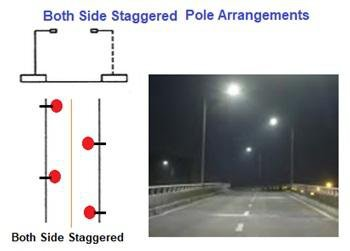


Tasks
- Review importance of road lighting, factors influencing night visibility, requirements of level of illumination in roads
- Review design of the lighting system: choice of lamp, luminaire distribution of light, spacing of lighting units, height and overhang of mounting, lateral placement, lighting layout